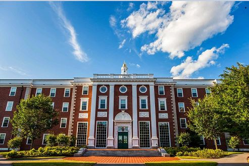

The United States is one of the world's most popular study destinations. It is home to many globally recognised universities, advanced research facilities, and diverse academic programs. Students choose the USA because of its education quality, innovation, and career opportunities.
American universities offer flexible study options, modern learning environments, and strong connections with industries. Students can gain practical skills, join research projects, and build professional networks for their future careers.
The USA has many student-friendly cities with top universities, strong career networks, and active student communities.
Boston is a famous education city. It is close to Harvard, MIT, and many other leading institutions.
New York offers strong opportunities in business, finance, media, technology, and international networking.
San Francisco is close to Silicon Valley. It is a great city for technology, innovation, and start-up careers.
Los Angeles is known for entertainment, design, business, technology, and a diverse student lifestyle.
Home to Harvard, MIT, Stanford and many globally ranked universities.
Strong research environment in technology, medicine and science.
Internship and career opportunities in many industries.
Note: IELTS, TOEFL, GPA, tuition fees, and scholarship rules can change by university and program. Students should always check the official university website before applying.

Harvard University is one of the oldest and most prestigious universities
in the world. Founded in 1636, it is known for academic excellence,
leadership, research, and innovation across many disciplines.
Location: Cambridge, Massachusetts
Popular Courses:
• Business Administration
• Law
• Medicine
• Political Science
• Economics
QS Ranking: Top 5 globally
International Students: 6,000+
IELTS Requirement: Usually 7.0 overall
Estimated Tuition Fees: USD 54,000 – USD 60,000 per year
Why Choose This University?
• One of the world's most respected universities
• Strong research opportunities
• Global alumni network
• Excellent graduate career outcomes
Massachusetts Institute of Technology (MIT) is one of the world's leading
universities for science, technology, engineering, and innovation.
It is famous for groundbreaking research and technological advancement.
Location: Cambridge, Massachusetts
Popular Courses:
• Computer Science
• Artificial Intelligence
• Engineering
• Robotics
• Data Science
QS Ranking: Top 3 globally
International Students: 3,500+
IELTS Requirement: Usually 7.0 overall
Estimated Tuition Fees: USD 57,000 – USD 62,000 per year
Why Choose This University?
• World's leading technology university
• Strong industry connections
• Cutting-edge research facilities
• Excellent innovation culture
Stanford University is one of the most respected universities in the world.
Located near Silicon Valley, it is known for innovation, entrepreneurship,
technology, and business leadership.
Location: Stanford, California
Popular Courses:
• Computer Science
• Business
• Engineering
• Artificial Intelligence
• Economics
QS Ranking: Top 10 globally
International Students: 4,000+
IELTS Requirement: Usually 7.0 overall
Estimated Tuition Fees: USD 58,000 – USD 65,000 per year
Why Choose This University?
• Close to Silicon Valley
• Strong entrepreneurship programs
• World-class research environment
• Excellent graduate employment outcomes
The University of California, Berkeley is one of America's leading public
research universities. It is known for innovation, academic excellence,
and strong programs in technology, science, and business.
Location: Berkeley, California
Popular Courses:
• Computer Science
• Engineering
• Data Science
• Business Administration
• Environmental Science
QS Ranking: Top 15 globally
International Students: 7,000+
IELTS Requirement: Usually 6.5 overall
Estimated Tuition Fees: USD 45,000 – USD 52,000 per year
Why Choose This University?
• Top public university in the USA
• Strong technology and research focus
• Excellent industry partnerships
• High graduate employability
University tuition fees, scholarships and admission requirements may change every year.
For latest updates, visit official university websites.
Visit EducationUSA Official Website